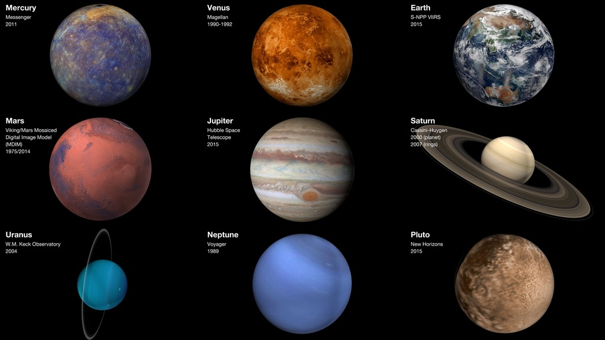

Our solar system is made up of a star—the Sun—eight planets, 146 moons, a bunch of comets, asteroids and space rocks, ice, and several dwarf planets, such as Pluto.

Mercury- is the closest planet to the sun and the smallest planet in the solar system — it is only a little larger than Earth's moon
Venus - venus isthe second planet from the sun and is the hottest planet in the solar system. Its thick atmosphere is extremely toxic.
Earth - our home planet, is the third planet from the sun. It is a water world with two-thirds of the planet covered by water.
Mars - is the fourth planet from the sun. It is a cold, desert-like planet covered in iron oxide dust that gives the planet its signature red hue.
Jupiter - is the fifth planet from the sun and the largest planet in the solar system.
Saturn - is the sixth planet from the sun and is famous for its large and distinct ring system.
uranus - is the seventh planet from the sun and is a bit of an oddball
neptune - is the eighth planet from the sun and is on average the coldest planet in the solar system.